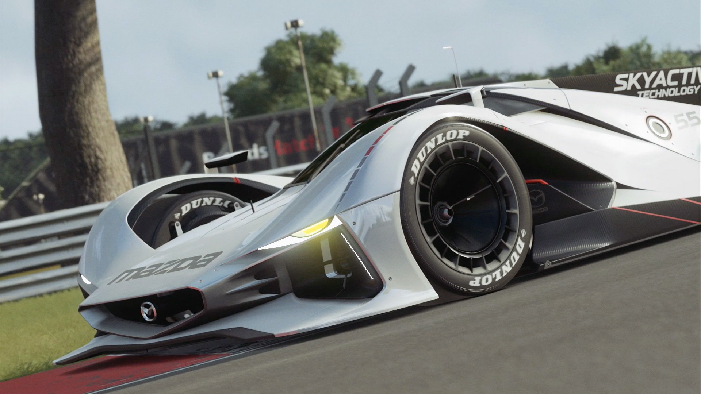
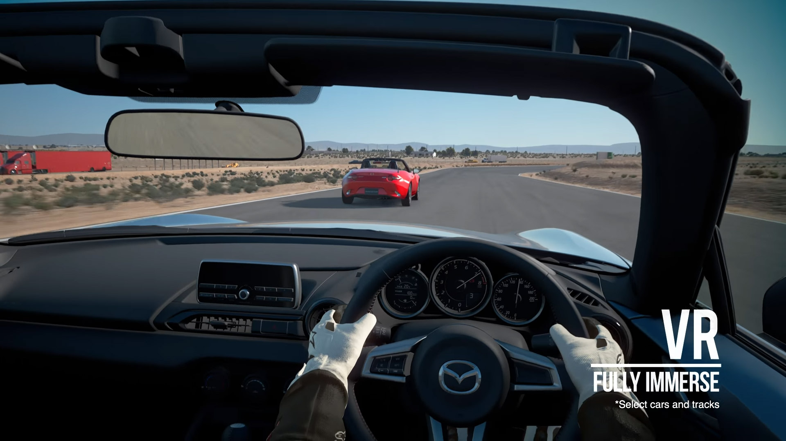

PlayStation's Flagship Racing Simulator
No matter if you enjoy single-player gameplay or online racing, Gran Turismo Sport has you covered. For playing alone, the game offers a great quality of racing and technical challenges. You must win at least a bronze medal in each challenge to unlock the next one. While that does mean a lot of content is locked initially, it does force you to master each challenge. This does help if your trying to improve your racing skills especially if your starting to try a true Manuel Transmision.
Welcome to Gran Turismo Sport
Each challenge shows the results of your friends, so in addition to aiming for gold it’s fun to beat their scores. Challenges test a wide variety of skills from accelerating, to corning, to winning races, and more. By the end you’ll be very familiar with a range of cars, circuit layouts, and skills needed to win. All these events also reinforce Gran Turismo Sport‘s simulation approach. Bad driving techniques aren’t tolerated because the goal is make you a better driver. After spending a few hours practicing braking, cornering, and driving faster it was time to check out the game’s online racing.
Simulated Racing at it's finest
| Game Details | ||
|---|---|---|
| Platforms | PlayStation 4 | |
| Developer | Polyphony Digital | |
| Publisher | Sony Interactive | |
| Genre | Racing, Simulation | |
| Modes | Single-player, Multi-player, Online | |
| ESBR Rating | E (Everyone) |
Right from the get-go you can tell Gran Turismo Sport takes its racing seriously. Before you can register for your first online tournament, you have to participate in a qualifying race. This involves learning proper driving etiquette by watching about five minutes of explanatory videos. The videos teach you to stay on the racetrack, avoid contact with others, and ensure you’re not driving dangerously. For racing beginners, this may be a big challenge to overcome. The good news is there’s a beginner league, so you can race with others learning just like you.
Gran Turismo Sport in PSVR
One of Sony’s main talking points for Gran Turismo Sport is the ability to play the game using PlayStation VR. It’s an exciting thought—imagine visiting your garage to see 360-degree versions of the cars you’ve acquired. You’re able to rotate the vehicle around, and turn the headlights on and off. It’s too bad you’re not able to open the doors and hood as that would have been even better.
Races in VR is 1v1 against an A.I. opponent. It’s not really a traditional race though as your competitor adjusts its difficulty so you always see them in your rearview mirror. While it would have been nice to play full races, having full freedom to change circuits and vehicles works well. After a few races it’s always good to take a breather as the experience is really shaky and fast-paced.
Conclusions & Rating
Gran Turismo Sport is an elegant, stylish, classy game. Everything about the game screams high quality. The cars look pristine, the locations are highly detailed, and the car physics feel right. Polyphony Digital has definitely created a racing game designed for those who love cars. With Daily Challenges and the promise of free future DLC, Gran Turismo Sport will keep racing fans busy for a while.
+ Stunning graphics
+ Great variety of cars and tracks
+ Using Six Axis to simulate steering wheel movements
+ Excellent PSVR experience
– Much more online content than single-player
– Wish there was more PSVR interaction with cars in your garage
| Ratings | ||
|---|---|---|
| Gameplay | 9/10 | |
| Graphics | 10/10 | |
| Sound | 7/10 | |
| Replayability | 8/10 | |
| Multiplayer/Online | 10/10 |